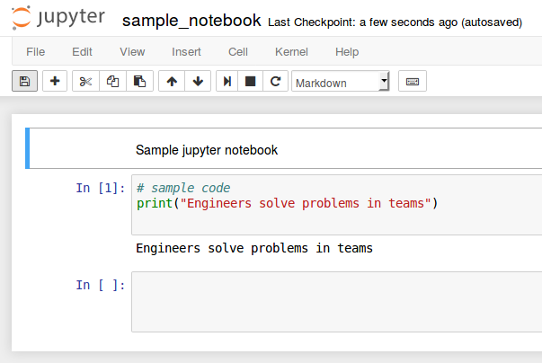

This is the fourth part in a multi-part series on how I built this site. In the last post, we installed the pelican-bootstrap3 theme and made our site mobile responsive. Now the site looks good on all devices. In this post we are going to install a couple of plugins to add extra functionality to our site. These plugins will allow our site to have a series of post that are linked together, create a working search bar, add youtube videos to posts, view LaTeX math and add embedded jupyter notebooks in posts.
Steps in this post
We are going to accomplish the following in this post. By the end of the post we are going to have a great looking website that contains a two-part series, a post with an embedded youtube video and a post that contains an embedded jupyter notebook.
- Activate our
staticsitevirtual environment - Pull the most recent version of our site from github
- Install
jupyterin ourstaticsiteenvironment - Modify the pelicanconf.py file to use new plugins
- Build some posts that will allow us to view the new plugins
- Build and preview the site with Pelican
- Add and commit the changes then push those changes to github
Seems like a lot to do, so let's get started.
Activate our virtual environment and pull the most recent version of the site down from github
$ conda activate staticsite
(staticsite) $ cd ~/Documents/staticsite
(staticsite) $ pwd
(staticsite) $ git pull origin master
Install the jupyter package in our staticsite virtual environment.
I like using jupyter notebooks to build code and solve engineering problems with Python. A jupyter notebook can contain Python code, the output produced when this code is run and markup text (used for documentation). Jupyter notebooks can also easily display matplotlib plots and pandas data frames. These two Python packages are very useful for engineers solving problems in teams. As the jupyter package is in the main conda channel, we can install it into our virtual environment using the conda install command.
(staticsite) $ conda install jupyter
We can see all of the modules installed in our (staticsite) environment with:
(staticsite) $ pip freeze
The output should look something like:
appnope==0.1.0
bleach==2.1.1
blinker==1.4
certifi==2017.11.5
decorator==4.1.2
docutils==0.14
entrypoints==0.2.3
feedgenerator==1.9
html5lib==0.999999999
ipykernel==4.6.1
ipython==6.2.1
ipython-genutils==0.2.0
ipywidgets==7.0.5
jedi==0.11.0
Jinja2==2.10
jsonschema==2.6.0
jupyter-client==5.1.0
jupyter-console==5.2.0
jupyter-core==4.4.0
Markdown==2.6.9
MarkupSafe==1.0
mistune==0.8.1
nbconvert==5.3.1
nbformat==4.4.0
notebook==5.2.2
pandocfilters==1.4.2
parso==0.1.0
pelican==3.7.1
pexpect==4.3.0
pickleshare==0.7.4
prompt-toolkit==1.0.15
ptyprocess==0.5.2
Pygments==2.2.0
python-dateutil==2.6.1
pytz==2017.3
pyzmq==16.0.3
qtconsole==4.3.1
simplegeneric==0.8.1
six==1.11.0
terminado==0.6
testpath==0.3.1
tornado==4.5.2
traitlets==4.3.2
Unidecode==0.4.21
wcwidth==0.1.7
webencodings==0.5.1
widgetsnbextension==3.0.8
Add new plugins to the pelicanconf.py file
Now we need to modify the pelicanconf.py file to use a couple new plugins. The plugins we will add are:
- 'series'
- 'tag_cloud',
- 'liquid_tags.youtube'
- 'liquid_tags.notebook',
- 'liquid_tags.include_code',
- 'render_math'
- 'pelican-ipynb.markup'
We add these to the PLUGINS = [ ] list in the pelicanconf.py file and separate them with commas.
#pelicanconf.py
PLUGINS = [
'i18n_subsites',
'series',
'tag_cloud',
'liquid_tags.youtube',
'liquid_tags.notebook',
'liquid_tags.include_code',
'render_math',
'pelican-ipynb.markup' ]
Build some posts that use the newly installed plugins
Now we will build a couple of posts which use our newly installed plugins. First we'll modify our content directory with a new folder called posts. We'll keep all the posts in this directory. Then we'll make a couple of new .md files. I'll copy our first post to this new directory with the cp (copy) shell command and then remove the old .md file with the rm command.
(staticsite) $ pwd
(staticsite) $ cd content
(staticsite) $ mkdir posts
(staticsite) $ cp first_post.md posts/first_post.md
(staticsite) $ rm first_post.md
Now let's modify the first_post.md file with a couple new lines in the header. The Series: and Series_index: lines will put this first post in series of posts using the series plugin.
first_post.md
Title: First Post - Part 1
Date: 2017-11-30 12:40
Modified: 2017-11-30 12:40
Status: published
Category: example posts
Tags: python, pelican, blog
Slug: first-post
Authors: Peter D. Kazarinoff
Series: example-post-series
Series_index: 1
Summary: This is the first post of a series of demonstration posts.
This is the first post of a series of demonstration posts.
After the post is saved, we can go back to the terminal and copy it to create our second post. The contents of our staticsite directory should look something like this:
staticsite/
├── LICENSE
├── Makefile
├── README.md
├── __pycache__
├── content
│ ├── posts
│ ├── first_post.md
├── develop_server.sh
├── fabfile.py
├── output
├── pelican-plugins
│ ├── i18n_subsites
│ ├── liquid_tags
│ ├── pelican-ipynb
│ ├── tipue_search
├── pelican-themes
│ ├── pelican-bootstrap3
├── pelican.pid
├── pelicanconf.py
├── publishconf.py
└── srv.pid
Let's make two new posts in the content/posts directory.
(staticsite) $ cd ~/Documents/staticsite/content/posts
(staticsite) $ cp first_post.md second_post.md
(staticsite) $ cp first_post.md third_post.md
Now we'll edit second_post.md so it's part of a series and contains an embedded YouTube video.
second_post.md
Title: Second Post - Part 2
Date: 2017-11-30 12:40
Modified: 2017-11-30 12:40
Status: published
Category: example posts
Tags: python, pelican, blog
Slug: second-post
Authors: Peter D. Kazarinoff
Series: example-post-series
Series_index: 2
Summary: This is the second post of a series of posts. It will show series and an embeded youtube video.
This is the second post of a series of posts. It will show series and an embedded youtube video.
{% youtube https://www.youtube.com/watch?v=Qq-5frjUfK0 [560] [315] %}
We'll create a sample jupyter notebook in a new folder called code in our content folder. The jupyter notebook will go in our third post. To create the code folder and bring up a new jupyter notebook in our web browser use:
(staticsite) $ pwd
(staticsite) $ mkdir content/code
(staticsite) $ cd content/code
(staticsite) $ jupyter notebook
Let's put one markdown cell, one code cell and produce one output cell in our jupyter notebook. We'll save it as example_notebook.ipynb. My sample_notebook.ipynb looks like:

Now we will put our example_notebook.ipynb into our third post. Including a juypter notebook requires the use of the line notebook path/to/notebook.ipynb surrounded with a { % % }.
third_post.md
Title: Third Post - Part 3
Date: 2017-11-30 12:40
Modified: 2017-11-30 12:40
Status: published
Category: example posts
Tags: python, pelican, blog
Slug: third-post
Authors: Peter D. Kazarinoff
Series: example-post-series
Series_index: 3
Summary: This is the third post of a series of posts. It will show series an jupyter notebook.
This post contains a jupyter notebook.
{% notebook ../code/sample_notebook.ipynb %}
Build and preview the site with Pelican
With a couple new pelican-plugins configured and three new posts written, it is time to preview our site again. We can build the site and can view it with a web browser using:
On MacOS and Linux:
(staticsite) $ make html
(staticsite) $ make serve
On Windows:
(staticsite) $ fab build
(staticsite) $ fab serve
To view the site, point a browser to localhost:8000
use ctrl-c to stop the server.
Add and commit the changes then push them to github
When we are done editing the the site, we add all of the changes to our local git repo using git add .. Then we commit those changes with git commit and add the -m "added plugins" flag to give supply a commit message (make sure to use double quotes "commit message"). To push those changes up to github use git push origin master
$ git add .
$ git commit -m "added plugins"
$ git push origin master
In the next post we will customize the site. We'll add some css in order to make tables on the site look better and put a search bar at the top of the page.